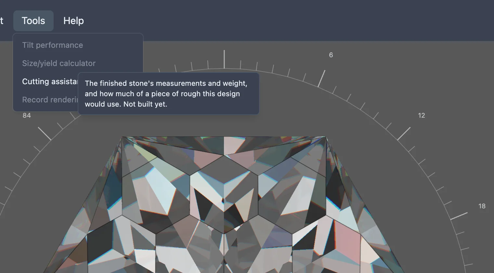

This feature is still being built. The menu item below exists, but choosing it does nothing yet.
Before cutting a stone, it helps to know how big the finished piece will end up, roughly how much it will weigh, and how much of a piece of rough the design will use — especially when the rough is expensive or an awkward shape. A size and yield calculator would work these out from the design.
None of that is built yet. In the studio's Tools menu, an item named Size/yield calculator is already there, but it is greyed out and does nothing when clicked. Hovering it shows a tooltip describing what it is meant to do, ending "Not built yet."
